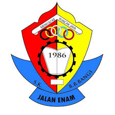

My Education
"Education is the most POWERFUL WEAPON which you can use it to change the WORLD."
On 2005, I started school when I was 5 years old. This school is near with my house. It took around 5 minutes and I went there by
bus with my friends. So, on the first day of school, I was excited and happy. But, in the next day, I started to cry every single day
because I did not want go to school. Even though I always crying, I think it is one of beautiful memory to be remembered.
In this school, I have been taught a lot of things such as reading, writing, how to pray, fasting and many more.

For primary school, I went to Sekolah Kebangsaan Jalan 6 on 2007 until 2012. It was located at Bandar Baru Bangi. I went there with my
mom every day because she was a teacher at the same school. Back then, I was a school prefect. On year 2012, I took the UPSR exam and I got
3A 2B for UPSR.

After finishing primary school, I got an offered from Sekolah Agama Menengah Sungai Merab Luar, Kajang on. So, I started went to secondary
school on 2013. During my time in secondary school I had really good moments, but my best moments that I've experienced are during my senior year.
It is because me and my friends are study hard for SPM. Through this, it makes our relationship stronger as we help each other when we are study.
As a result, I got 5A 3B+ for SPM.

I managed to continue my studies at UiTM Kedah. I first became a student at UiTM Kedah when I was 18 years old (2018), studying in majors of library
management. It was my first time to be apart with my family This was one of the best things I have ever done, meeting new friends, making memories,
and I also learn how to live independently without my family and many more.
I chose the majors in library management because I want to learn something new and to gain some knowledge. I enjoy the course, as it is very interesting
learning. All of these are subjects I have never studied before, and the course is very good at keeping everyone on the same page. We are all taught the
basics, so we are all at the same level of understanding. The course is quite challenging, and it can be very difficult at times, but Alhamdulillah, so far
I can handle the pressure and get a good results for final exam.